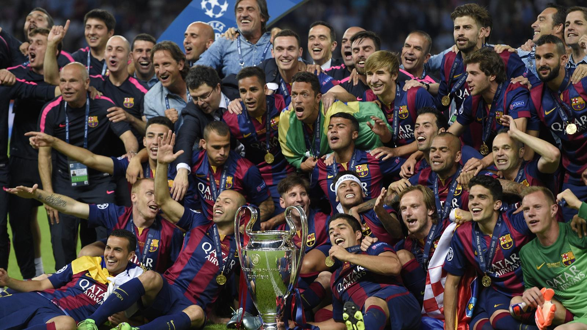

Футбольный клуб «Барселона»
Футбольный клуб «Барселона» (Barcelona), также известный как «Барcа», был основан шведским бизнесменом Гансом Гэмпером, поместившем 22 октября 1899 года в местную газету заметку, в которой приглашал всех желающих принять участие в создании футбольного клуба. Откликнулись 11 человек и уже через месяц 29 ноября 1899 года команда, получившая название ФК Барселона (Foot Ball Club Barcelona) была сформирована.
С первого дня основания команды форма клуба имела сине-гранатовую расцветку: одна половина майки была синей, а другая гранатовой, трусы же были белого цвета.
В 1910 году появилась знаменитая эмблема Барселоны, которая с незначительными изменениями сохранилась и по сей день. В начале за основу был взят герб Барселоны, дабы подчеркнуть принадлежность клуба к городу, однако позже правление приняло решение о создании собственного герба, был объявлен конкурс, который выиграл анонимный участник.
Уже в 1902 году Барселона выигрывает свой первый трофей - Кубок Macaya (предшественник чемпионата Каталонии). В сезонах 1904-1905 и 1908-1909 команда выигрывает чемпионат Каталонии. Первые матчи «Барселона» проводила на территории «Hotel Casanovas» (1900 год), «la carretera d'Horta» (1901 год), «el carrer Muntaner» (1905 год) и «carrer Industria», ставший первым стадионом, принадлежащим непосредственно клубу. Официально стадион был открыт 14 марта 1909 года, к тому времени «Барселона» уже начала выигрывать свои первые громкие трофеи. В 1922 году был открыт стадион «Les Corts».
Период с 1919 по 1929 год стал золотой эрой в истории клуба. Барселона побеждает в чемпионате Каталонии в сезонах 1923-1924, 1924-1925, 1925-1926, 1926-1927 и 1927-1928. В 1929 году проводится первый чемпионат Испании в привычном для сегодняшних дней формате и первым его победителем становится Барселона.
В «Барселоне» тех лет блистали такие игроки, как Самитьер, Алькантара, Замора, Саги, Пиера, Санчо. В 1930-е годы «Барселона» становится символом антифранкистской коалиции как в Испании вообще, так и в футболе в частности.
В марте 1940 года, после того, как президентом клуба стал Энрико Пинейро, клуб поменял свое название с английского Futbol Club Barcelona на испанский вариант - Club de Futbol Barcelona (в 1973 году было возвращено прежнее название), а четыре красных полосы каталонского флага на эмблеме были заменены двумя.
В 1940-е и 1950-е годы клуб выиграл семь чемпионатов Испании и шесть национальных Кубков. Кроме того, команда начала участвовать в европейских турнирах, и на данный момент "Барселона" является единственным клубом, не пропустившим ни одного европейского сезона.
В июне 1950 года в «Барселону» пришел великолепный бомбардир Ладислав Кубала, который, по мнению болельщиков, был признан лучшим игроком за всю историю команды. В период с 1951 по 1953 год «Барселона» выиграла все внутренние трофеи: дважды чемпионат Испании (1951/1952, 1952/1953 сезонов), трижды Кубок Испании (1951, 1952, 1953 годы). В сезоне 1951/1952 команда завоевала сразу пять трофеев: чемпионат и Кубок Испании, Латинский Кубок (это соревнование проводилось до создания Лиги Чемпионов, в нем принимали участие южно европейские команды), Кубок Мартина Росси и чемпионат Каталонии.
В 1971 году «Барселона» выиграла Кубок Испании, а через два года в команде появился великий Йохан Круифф, с которым клуб выиграл чемпионат Испании 1973/1974.
Среди великих побед того времени можно отметить завоевание Кубка обладателей Кубков 1979 года, чемпионат Испании 1984/1985, выигранный с внушительным отрывом от преследователей, период с 1990 по 1994 годы, когда команду возглавлял легендарный Йохан Круифф, сумевший завоевать четыре чемпионских титула и Кубок Чемпионов, добытый в финале на лондонском «Уэмбли» после победы над итальянской «Сампдорией» со счётом 1:0.
«Барселона» для Каталонии это не просто футбольный клуб, это религия, которая объединяет людей. К тому же «Барса» - один из величайших клубов мира, обладающий поистине фантастическим набором титулов и трофеев: восемнадцатикратный чемпион Испании(1929, 1945, 1948, 1949, 1952, 1953,1959, 1960, 1974, 1985, 1991, 1992, 1993, 1994, 1998, 1999, 2005, 2006), двукратный обладатель Латинского Кубка (проводился до 1955 года), трехкратный победитель Кубка Ярмарок/УЕФА (1958, 1960, 1966), четырехкратный обладатель Кубка Кубков (1979, 1982, 1989, 1997), дважды победитель Лиги Чемпионов (1992, 2006), владелец двух Суперкубков Европы (1993, 1998),